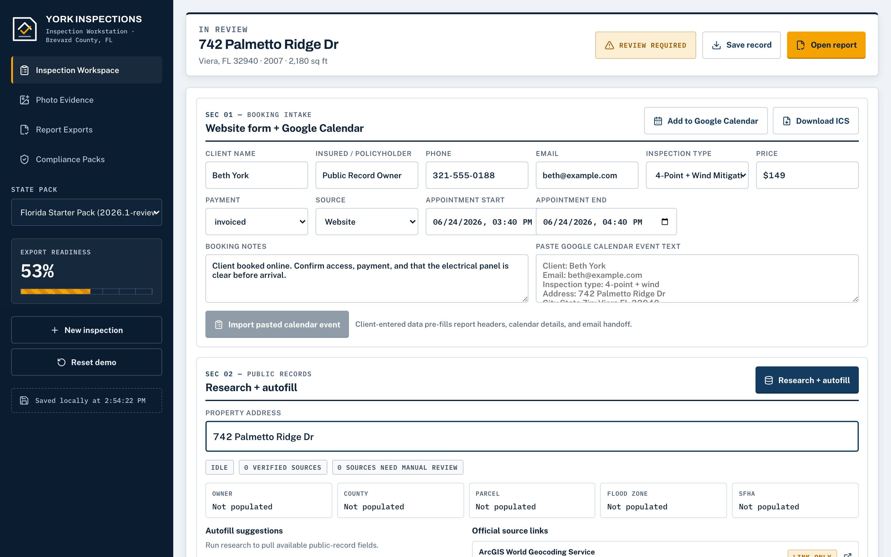
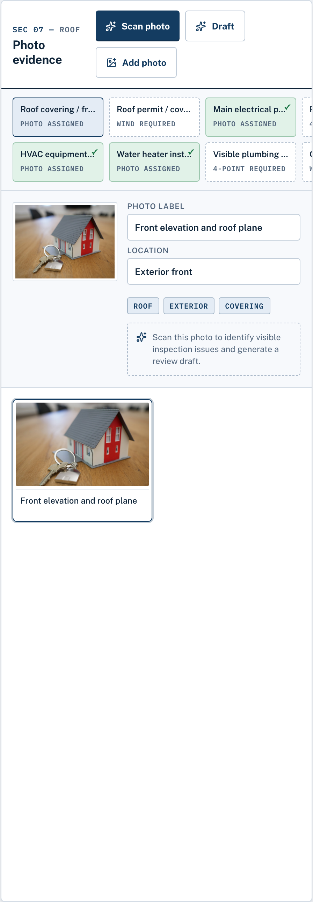
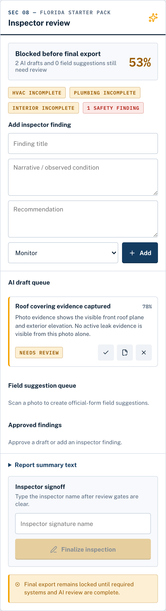
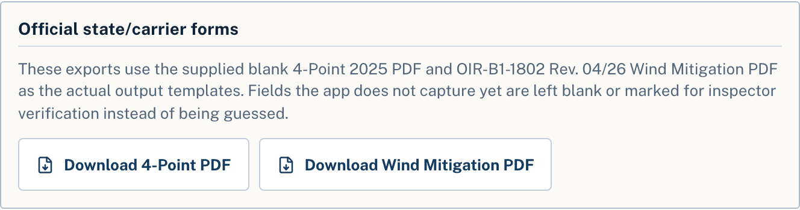
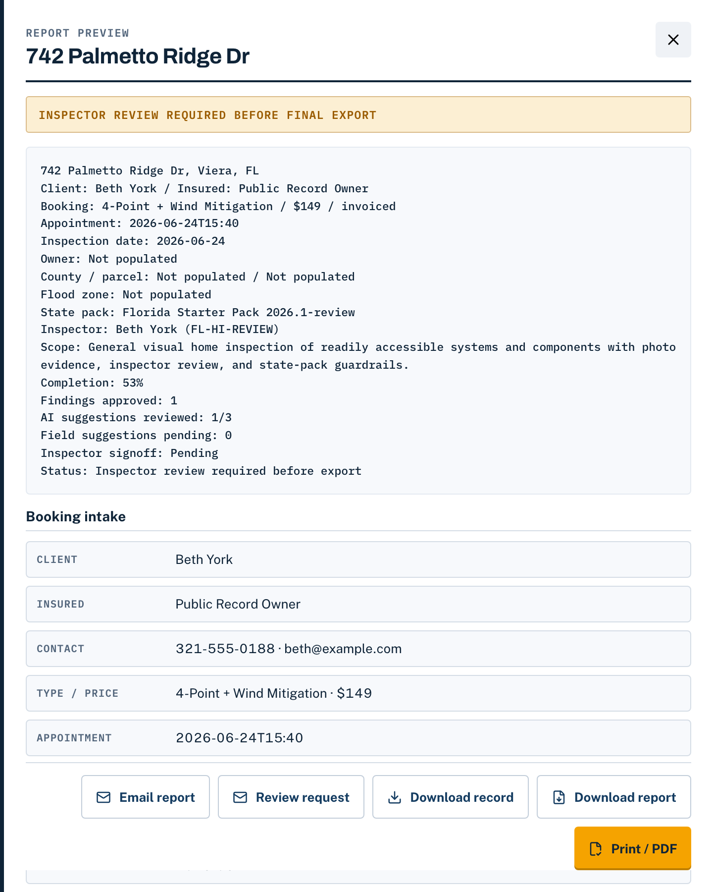

For Florida home inspectors
Run full-home, 4-point, and wind mitigation inspections from the palm of your hand. Inspector Gadgets pulls the property research, guides the walkthrough, organizes every required photo, pre-fills the official forms, and keeps the entire job together — from the appointment to the finished PDFs.
Start a 3-day free trial with full access. A card is required, and your chosen plan is charged on day 3 unless you cancel. Or see the step-by-step tour.

Sec 01 — Less paperwork. Fewer return trips.
The walkthrough is only part of the job. You still have to find the property record, check permits, organize photos, fill the forms, review the report, and send everything out. Inspector Gadgets puts those steps into the inspection itself, so the paperwork moves forward while you work.
Pull owner, parcel, year built, square footage, flood zone, permits, and roof details into the job — instead of copying them off the appraiser's site and typing them onto two forms by hand.
Guided system checklists and required-photo slots show what the inspection still needs before you leave the property — so a forgotten panel label or data plate can't send you back across the county.
Carry verified inspection information into the Florida 4-Point and OIR-B1-1802. A documented roof age from a permit number and issue date holds up with the carrier — a guessed year puts your license on the line.
Sec 02 — Before and after
Sec 03 — One organized inspection workflow
Want it choice by choice? See the full step-by-step walk-through →
Drop it straight in from Google Calendar, import an .ics, or type it. The appointment syncs right back to your calendar.
Owner, parcel, year built, square footage, flood zone, and permit history — statewide FL from FDOR, county appraisers, and permit portals (design wind speed too, where county GIS publishes it). Every value shows its source with a link, and you can override anything.
It maps to exactly what the 4-Point and Wind Mit forms require — panel label, HVAC plate, water heater, roof, opening protection, elevations, roof-to-wall. Bulk-import auto-sorts your shots into the right slots, so you leave with every one.
It reads each photo, drafts the finding, and fills in the form answer for your review — OCR-decoding data plates into appliance age right on your device. You approve, edit, or reject every single suggestion. Nothing enters the report on its own.
Export the official Florida 4-Point (2025) and Wind Mitigation OIR-B1-1802 (Rev. 04/26) PDFs on the real state templates, with captioned photo pages appended. Email the client from a saved template or share a view-only link — before you pull off the curb.

Sec 04 — What you're actually getting
Paste the booking, tap once for the county records, shoot the guided checklist, and the app drafts the findings and fills in the answers as you go. You approve each one and export the official PDFs before you leave. The state licensed your eye and your signature — not your typing speed. Spend the job inspecting, not keying parcel numbers after dark.
The checklist maps to exactly what the forms require, and the report can't be finalized until every required item is there. Bulk-import auto-sorts your shots into the right slots, so a forgotten panel label can't send you back across the county. Every required photo, checked off, before you pull out of the driveway.
Every pulled value shows its official source with a link — when a carrier questions a number, you point to the record. Anything the app can't verify is left blank, never guessed, and when the AI isn't sure it says so and asks for a better photo instead of inventing one. Fewer kickbacks, fewer redos, fewer "the number didn't match" calls on your weekend.
Sec 05 — Faster at every step
Every step that meant re-typing, tab-hopping, or a second trip across the county is handled for you now — so the whole job moves at the speed of the walkthrough.
Sec 06 — Don't take it on faith
The app drafts and fills in answers, but nothing lands in the report on its own — you approve, edit, or reject each one, and it won't finalize until you have. Your license does the signing.
Exports are the real Florida 4-Point (2025) and Wind Mitigation OIR-B1-1802 (Rev. 04/26), filled on the actual state templates with your captioned photo pages appended.
Built with York Home Inspections in Brevard County, around the way inspections actually run in Melbourne, Viera, and Rockledge. No testimonials, no user counts, no star ratings — just the tool and what it produces.

Don't take our word for it
Preview the live records pull on any job from your own schedule and see exactly what you'd never type again. Start a free trial to use it on real reports.
Sec 07 — What you hand over
No retyping into carrier portals, no lookalike templates. When the inspection is signed, everything the carrier, the agent, and your client expect is ready to send.
Filled in on the official state form — the one carriers actually ask for. Anything you didn't verify stays blank instead of guessed.
The official OIR-B1-1802, completed on the real template — the same form every underwriter already knows. Same rule: blanks stay blank.
A polished, printable report that looks as professional as your work. Hand it to the agent without apologizing for it.
Save a complete copy of any inspection — photos, findings, forms, all of it. Your records stay in your hands, not locked inside somebody's software.
The 4-Point export uses the official 2025 Florida form; wind mitigation uses OIR-B1-1802 (Rev. 04/26). Fields you haven't verified are always left blank — never guessed.


Sec 08 — Built to earn it
Every drafted finding and suggested answer comes to you first — approve it, change it, or throw it out. The report can't be finalized until you've reviewed each one. The tool suggests; the licensed inspector decides.
If the inspection didn't establish it, the form doesn't say it. Unverified fields are left blank on every export — never guessed, never filled in on your behalf. And when the AI isn't sure, it says so and asks for a better photo.
Inspection data syncs securely to your account, so it's on every device you sign in on, and you can save a complete copy of any job whenever you like. Your plan pays for the tool — it never holds your files hostage. Your business stays your business.
Built with York Home Inspections in Brevard County, Florida, around the way inspections actually run in Melbourne, Viera, and Rockledge. Every screen exists because a working inspector needed it.
What the desk work really costs
Call the lookup-and-retype drill 25 minutes per insurance job, conservatively. At the ~$90 an hour a wind-mit/4-point combo actually pays you, that's about $35 of your time per report. Inspector Gadgets costs $2 a report on the monthly plan — and on unlimited, a 300-report year works out to 33 cents each. For reference: the mainstream report writers run $90+ a month and still hand you a blank wind mit, and permit-lookup services charge $5 just to see the permit history without typing a single field for you. Doing four insurance jobs a day? That's 100 minutes back — room for one more paid combo on the schedule.
$20/mo covers 10 inspections. $98/mo — or $980/yr prepaid — makes it unlimited.
Sec 09 — Choose what fits your schedule
Pick a plan and get full access for 3 days. A card is required, and your chosen plan is charged on day 3 unless you cancel. Cancel anytime before then and you won't be charged.
Professional
$20 per monthFor the working inspector — covers a steady week-in, week-out schedule.
Unlimited
$98 per monthEvery inspection you run, uncapped — for a full schedule.
Unlimited Annual
$980 per yearUnlimited, prepaid for the year — the best effective rate.
Company Accounts
Multiple inspectors under one firm — shared branding, team scheduling, and one consolidated bill.
Every plan starts with a 3-day free trial; a card is required and your plan is charged on day 3 unless you cancel. Nothing to install. Cancel anytime — your saved work stays yours.
For reference: mainstream inspection platforms run $90–109/month and still hand you a blank wind mit template.
Sec 10 — Fair questions
The app drafts and fills in answers, but it can't finalize a report without you — you approve, edit, or reject every single one, and it won't finalize until each has been reviewed. Unverified fields are left blank, never guessed, and when it isn't sure it says so and asks for a better photo. The AI never signs anything. Your license does.
Compare it to one evening, not to other apps. Skip a single drive-back or head off one bounced report and the year's already covered. If getting home to your family instead of the kitchen-table form even once a month is worth twenty bucks, it's already paid for. Or run Unlimited at $98/mo — or $980/yr prepaid — and never count inspections.
Nothing to install. It runs in your browser on the phone, tablet, or laptop you already carry to the job. Paste tomorrow's booking straight from Google Calendar and you're working — and the appointment syncs right back to your calendar.
The real ones — the official Florida 4-Point (2025 edition) and Wind Mitigation OIR-B1-1802 (Rev. 04/26), filled on the real state templates with your captioned photo pages appended. What you email the client is the official document. A full Standards-of-Practice report is there for full-home jobs too.
Sixteen Florida counties plus seven city portals today — including Brevard, Hillsborough, Pinellas, Lee, Polk, Martin, St. Johns, and Indian River — and the list grows as counties expose their data. For every other address you get a one-click link to that jurisdiction's own permit portal, so the search takes one tab instead of ten. The app tells you which you're getting the moment you enter the address — we don't blur the line. Property records are separate and pull statewide, all 67 counties, from the FL DOR roll. Want to see it on a real address first? Run a Free Records Check.
The output is the official OIR-B1-1802, current edition (Rev. 04/26). When the state updates the form, we update the template — you never ship a report on a retired edition, and you never re-buy anything to get the new one.
Every pulled value shows its source with a link, and you can override anything. You're never stuck with a number you don't trust — you confirm it against the property and correct it right there before it goes on the form.
Synced to your account, so you can pick up on any device. You can save a complete backup anytime, and if you ever cancel, your saved work stays yours.
Use it on a real job
Start with an inspection already on your schedule. Pull the property research, follow the guided checklist, review the forms, and see how much of the job is finished before you leave. Built for qualified inspectors — you review every finding and sign every final report.
Start My Free Inspection3-day free trial · $20/mo for 10 · $98/mo unlimited · $980/yr